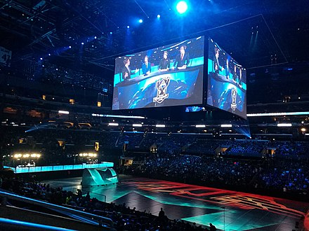
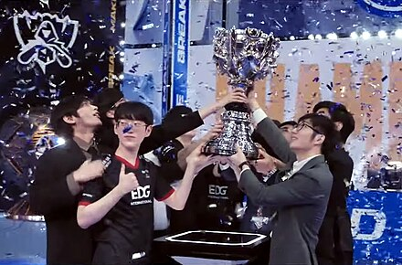
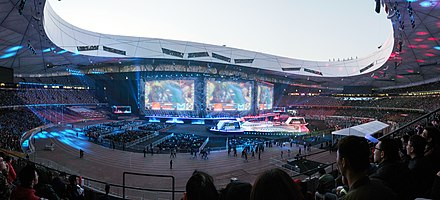

The League of Legends World Championship (often abbreviated as Worlds) is an annual esports tournament organized by Riot Games, the developer of League of Legends (LoL). It is the culmination of the competitive LoL season and showcases the top teams from around the world competing for the title of world champion. The first League of Legends World Championship took place in 2011, shortly after the game's official release. It featured 8 teams from various regions competing in a tournament held in Jonkoping, Sweden, during DreamHack Summer. Fnatic, a European team, emerged as the inaugural champions, defeating against all authority (aAa), another European team, in the grand finals. Overall, the League of Legends World Championship series has become a flagship event in the esports calendar, showcasing the pinnacle of competitive gaming talent and providing unforgettable moments for fans and players alike.
This esport is recognized by official, which means that LOL has much more international infulence that MLBB!!!
The 2023 World Championship was held from 10 October to 19 November 2023, with the event taking place in two cities across South Korea: Seoul and Busan. Twenty-two teams qualified to participate at the World Championship based on placement within their own regional leagues and previous regional results in international play. Albeit, one team qualified for the event through the newly inaugurated Worlds Qualifying Series between the fourth-seeded teams from the LEC and LCS. The format for the event differed to the previous editions, with the introduction of a play-in stage, consisting of eight teams who are split into two double elimination brackets. There, three teams qualified to the second stage of the event where the qualifying teams, along with thirteen other teams, faced off in a swiss-system tournament to determine the qualifiers to the knockout stage, with the eventual champions being crowned at the conclusion of the single-elimination knockout stage. The finals was played at the Gocheok Sky Dome on 19 November 2023 between Weibo Gaming from the League of Legends Pro League (LPL), and previous years' finalist DRX from the League of Legends Champions Korea (LCK). In the final, T1 defeated Weibo Gaming 3-0, extending their record for the most world championships won by single team with four titles. T1's top laner, Choi "Zeus" Woo-je, was named the MVP of the series, while teammate Lee "Faker" Sang-hyeok became the first player to win four World Championships.



The 2024 World Championship will be held from 25 September to 2 November 2024, with the event taking place in three cities across Europe: Berlin, Paris and London. Twenty-two teams will qualify to participate at the World Championship based on placement within their own regional leagues and results gained in this years' Mid-Season Invitational (MSI), with the LCK and LPL's 4th seeds in the Swiss stage reallocated to the winner and a team from the best performing region of the event. It was revealed during the finals' broadcast of the 2023 World Championship, that the finals of this years' Worlds is set to take place in London at The O2 Arena on 2 November 2024.
| Year | Location | Final | Champion | Score |
| 2018 | Seoul Busan Gwangju Incheon | IG vs Fnatic | IG | 3:1 |
| 2019 | Berlin Madrid Paris | FunPlus Pheonix vs G2 Esports | FunPlus Pheonix | 3:0 |
| 2020 | Shanghai | Damwon Gaming vs Suning | Damwon Gaming | 3:1 |
| 2021 | Reykjavik | Edward Gaming vs DWG KIA | EDG | 3:2 |
| 2022 | Mexico City, New York, Atlanta, San Francisco | DRX vs T1 | DRX | 3:0 |
| 2023 | Busan Seoul | T1 vs Weibo Gaming | T1 | 3:0 |